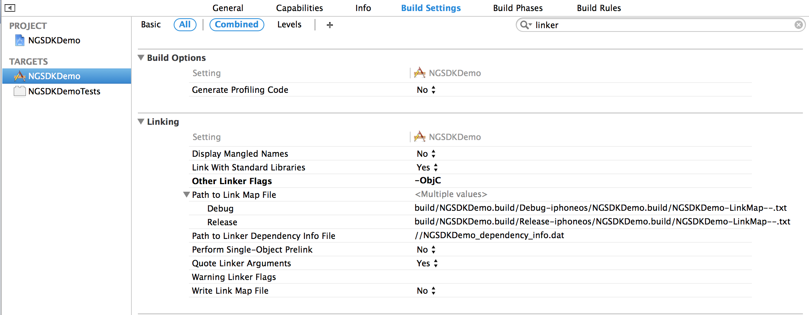
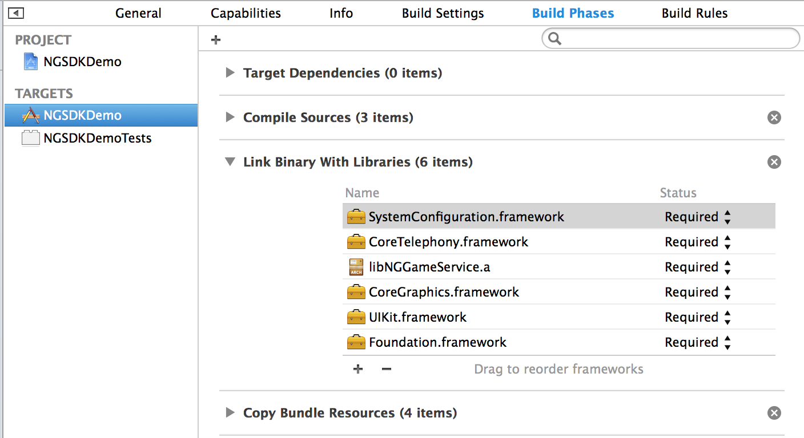
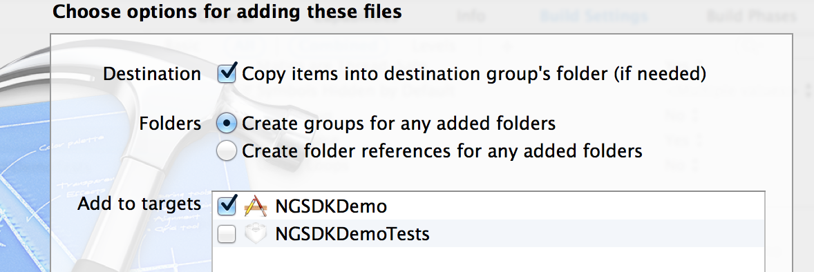
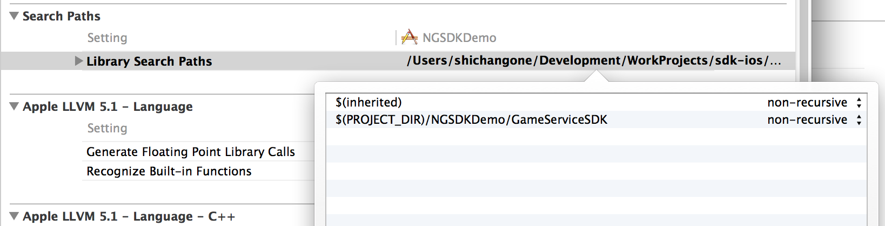

GameService iOS SDK 说明文档 V1.0.2
更新履历
| 版本号 | 时间 | 更新内容 |
|---|---|---|
| v1.0.2 | 2014.08.07 | 修改登陆框消失问题，添加本地签名 |
1、SDK构成
- 静态库 libGameServiceSDK.a, libGameService-arm64.a
- 头文件: NGGameService.h, NGNotifications.h, NGPaymentController.h
- 资源文件 GameServiceResource.bundle
- Demo工程
GameService SDK支持armv7、armv7s和arm64架构的iOS设备，iOS要求5.0以上，Xcode要求4.2以上，操作系统要求Mac OS X 10.7以上。
- 如果需要支持arm64，请使用静态库libGameServiceSDK-armv64.a
2、项目配置
2.1 添加链接参数
在工程target的"Build Settings"中，找到"Linking"的"Other Linker Flags"，添加参数-ObjC。

2.2 添加Framework
在工程target中添加以下的framework:
SystemConEiguration.framework
QuartzCore.framework
Security.framework
CoreTelephony.framework
CoreText.framework

2.3 添加GameServiceSDK
- 将GameServiceSDK文件夹拖入Xcode工程. 
- 在项目target的"build settings"中，找到"Search Paths"的"Library Search Paths", 如果GameServiceSDK的路径是绝对路径的，请改为相对路径。 
3、GameService平台SDK使用
3.1 平台初始化
AppID和AppKey请到GameService 开发网站后台查看获取，需要先创建App。
初始化需要设置AppID和AppKey：
[NGGameService setAppID:@"9" AppSecret:@"0WiCxAU1jh76SbgaaFC7qIaBPm2zkyM1"];
设置App的URL Scheme，用于支付宝支付和微博SSO登陆,为保证URL Scheme的唯一，建议使用URL Scheme使用格式为: NGGameService + (AppID):
[NGGameService setAppURLScheme:@"NGGameService9"];
设置App屏幕方向(默认为横屏，不能同时横屏和竖屏切换):
[NGGameService setOrientation:UIInterfaceOrientationMaskLandscape];
请在程序启动后设置初始化信息：
- (BOOL)application:(UIApplication *)application didFinishLaunchingWithOptions:(NSDictionary *)launchOptions
{
......
[NGGameService setClientID:@"9" clientSecret:@"0WiCxAU1jh76SbgaaFC7qIaBPm2zkyM1"];
[NGGameService setAppURLScheme:@"NGGameService9"];
[NGGameService setOrientation:UIInterfaceOrientationMaskLandscape];
......
}
3.2 账号
3.2.1 登录
登录接口:
[NGGameService login];
允许用户跳过登录界面的接口:
[NGGameService loginWithAllowSkip];
说明:若当前用户已登录，调用登录接口会直接收到登录完成通知，不会显示登录界面。
3.2.2 判断是否登录
[NGGameService isLogin]
3.2.3 注销
[NGGameService logout];
开发者注意调用注销后更新游戏场景。
3.2.4 登录结果处理
用户进行登录操作并登录成功后，平台会发送登录成功通知kNGLoginDidSuccessNotification，开发者在收到通知后进行登录成功处理。
[[NSNotificationCenter defaultCenter] addObserver:self selector:@selector(onUserLogin:) name:kNGLoginDidSuccessNotification object:nil];
处理方法:
- (void)onUserLogin:(NSNotification*)n {
[self refreshLoginButton];
if ([NGGameService isLogin]) {
NSString* userID = [NGGameService userID]; //获取userID
NSString* accessToken = [NGGameService accessToken]; //获取access token
//验证accessToken
}
}
登录成功后，可根据accessToken向服务器验证当前登录的有效性。
如果登录界面有跳过按钮，用户选择跳过,平台会发送跳过通知kNGDidSkipLoginNotification。
3.2.5 获取已登录用户信息
[NGGameService userID]; //获取userID
[NGGameService accessToken]; //获取access token
[NGGameService nickName]; //获取用户平台昵称
3.3 支付
支付相关类在NGPaymentController.h文件中。
3.3.1 生成支付请求
填写订单信息:
NGPaymentRequest* payment = [[NGPaymentRequest alloc] init];
payment.appName = @"测试游戏"; //游戏名称
payment.subject = @"测试商品名称"; //商品名称
payment.body = @"测试商品描述"; //商品描述
payment.amount = 100; //价格（单位为“分”）
payment.notifyURL = @""; //回调地址，
payment.appID = @"9"; //应用ID
payment.appUserID = @"123"; //应用当前登录用户ID
payment.appOrderID = ; //应用订单ID
payment.appUserName = @"角色名"; //应用当前登录用户名
注：以上数据必填。
3.3.2 交易签名
为防止交易请求被篡改，需要对订单的数据进行签名。提供两种签名方式：
3.3.2.1 服务器签名，
为保证资金安全，建议所有开发者使用服务器签名！！
填充完订单请求后，获取待签名的字符串：
NSString* stringToSing = [payment stringToSign];
客户端提交该字符串到开发者的服务器端进行签名，填充到NGPaymentRequest的sign字段。
payment.sign = signiture; //signiture由开发者服务器返回
服务器端的签名配置见Game Service服务端接入 说明文档。
3.3.2.1 本地签名
注意！！！本地签名存在一定的支付隐患，可能对你的游戏收入造成影响，只建议没有配备自有服务器的单机游戏使用。
将NGPaymentRequest的usingLocalSigniture设置为YES.
payment.usingLocalSigniture = YES;
3.3.3 显示支付界面
使用支付请求初始化支付界面:
NGPaymentController* controller = [[NGPaymentController alloc] initWithPayment:payment];
controller.paymentDelegate = self;
[self presentViewController:controller animated:YES completion:nil];
3.3.4 处理支付结果
实现NGPaymentControllerDelegate接口。
支付成功处理:
- (void)paymentController:(NGPaymentController*)paymentController didSuccessWithResult:(NGPaymentResult*)result { NGPaymentRequest* request = paymentController.payment; NSString* orderID = result.orderID; //平台订单ID [self dismissViewControllerAnimated:YES completion:nil]; }
支付完成后，开发者服务端通过平台订单id来确认订单完成。
取消支付
- (void)paymentDidCancel:(NGPaymentController*)paymentController { [self dismissViewControllerAnimated:YES completion:nil]; }
3.3.5 处理支付宝支付结果和微博SSO登录
在AppDelegate的application:handleOpenURL:和application:openURL:sourceApplication:annotation:中添加如下代码：
- (BOOL)application:(UIApplication *)application handleOpenURL:(NSURL *)url {
return [NGGameService handleOpenURL:url];
}
- (BOOL)application:(UIApplication *)application openURL:(NSURL *)url sourceApplication:(NSString *)sourceApplication annotation:(id)annotation {
BOOL handled = [NGGameService handleOpenURL:url];
if (handled) {
return YES;
}
//开发者添加自己的OpenURL处理
return NO;
}
3.4 数据采集
玩家用户登录行为记录（用于玩家行为统计以及进行玩家间p2p推送）：
[NGGameService setLoginPlayerID:@"123456677"];玩家用户付款行为统计：
[NGGameService logPaymentWithPlayerID:@"123456677" payAmount:100];
3.5 推送设置
3.5.1 配置推送证书(已经有p12证书的可以跳过这一步)
详见APNS证书创建流程。
3.5.2 上传推送证书到GameService
- 登录GameService开发者后台；
- 在游戏管理页面，在对应游戏的那一行上点击编辑按钮进入编辑界面；
- 点击开发环境APNS证书打开文件选择框，选择p12证书并上传；
3.5.3 获取并上传device token
请求device token:
[[UIApplication sharedApplication] registerForRemoteNotificationTypes:UIRemoteNotificationTypeBadge | UIRemoteNotificationTypeAlert | UIRemoteNotificationTypeSound];
在UIApplicationDelegate中获取device token，上传到GameService：
- (void)application:(UIApplication *)application didRegisterForRemoteNotificationsWithDeviceToken:(NSData *)deviceToken {
[NGGameService setPushToken:deviceToken]; //上传device token
}
如果无法获取到到device token，请在application:didFailToRegisterForRemoteNotificationsWithError:中查看错误原因：
- (void)application:(UIApplication *)application didFailToRegisterForRemoteNotificationsWithError:(NSError *)error {
NSLog(@"%@", error);
}